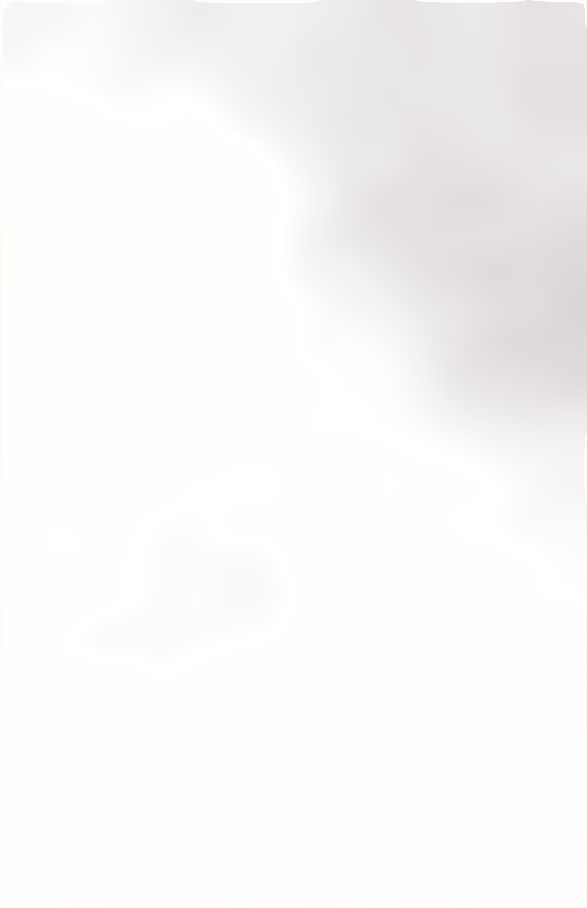

Upper West Side, New York
Open 7 a.m. to 11 p.m.
FOX& SONSBOOKS
The Cafe
Our new store on Broadway. Bring any book to your table.Story hour Saturdays at 11
Short, tall, light, dark, caf, decaf
The coffee bar
Tall decaf cappuccino2.95
Two shots of decaf espresso, steamed milk and a deep crown of foam.
Caffè latte2.75
Espresso with plenty of steamed milk under a thin layer of foam.
Coffee of the day1.52
Our house roast, brewed fresh every hour. Refills are free.
Hot cocoa1.95
Dark chocolate melted into hot milk, with whipped cream.
FOX BOOKS
Now
Open
Open
FALL 1998
